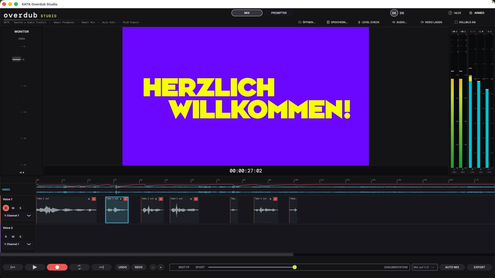

Voice-Over in Sendequalität – ohne Technikstress. Vom Skript bis zum fertigen Beitrag in einer App. Video laden → Text laden → sprechen → fertig.

Keine komplexe DAW, kein Setup, kein Herumprobieren. Overdub Studio ist für alle, die schnell vertonen müssen – sauber, verständlich und sendefertig.
Pausen werden automatisch entfernt. Versprecher? Einfach neu ansetzen. Den Rest erledigt die App im Hintergrund.
Deine Stimme wird automatisch optimiert – klar, gleichmäßig und auf Sendelautstärke. Du musst nichts einstellen.
Stimme, Musik und Effekte werden automatisch in Balance gebracht – exakt auf Sendelautstärke. Kein Reglerklicken, kein Nachmischen.
Der Text läuft mit deiner Stimme mit. Deine Leseposition bleibt stabil – du kannst dich ganz auf den Inhalt konzentrieren.
Video laden, abspielen, vertonen. MXF bleibt beim Import und Export vollständig erhalten. Alles bleibt synchron, der Timecode ist immer im Blick.
Pre-Roll, klare Pegelanzeige und direktes Monitoring – so einfach wie ein Take im Studio.
Per Drag & Drop starten – das Audio ist direkt vorbereitet.
Einfügen oder öffnen – sofort im Prompter sichtbar.
Aufnehmen, korrigieren, weitermachen – ohne den Flow zu verlieren.
Auto Mix klicken – und direkt exportieren.
Native C++, JUCE 8, lokal — kein Cloud-Sync, kein Streaming.
Overdub Studio ist kein Baukasten – sondern ein Werkzeug. Für schnelle, professionelle Vertonung im Redaktionsalltag. Einmal installieren, sofort arbeiten. Kein Abo. Keine Cloud. Alles bleibt lokal.